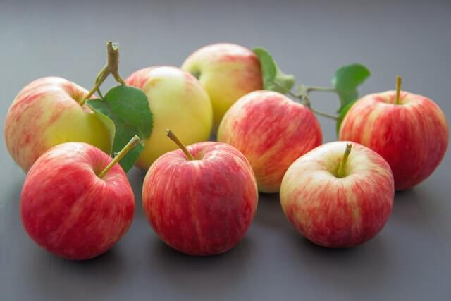
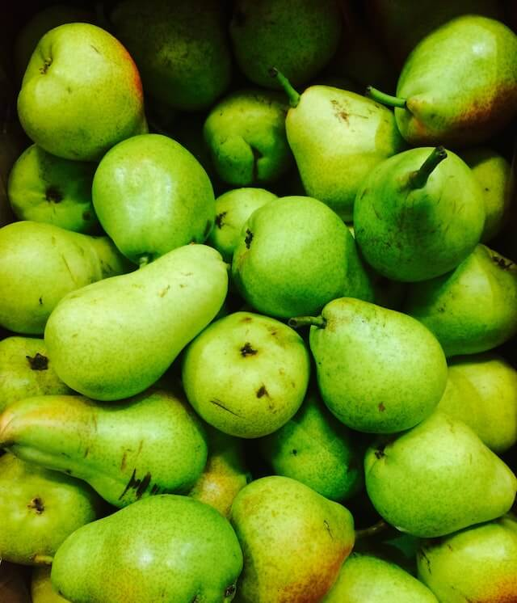
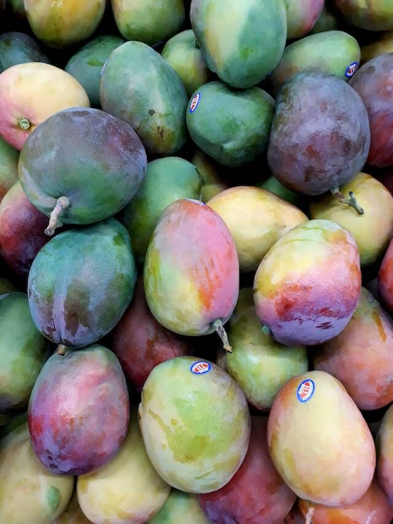
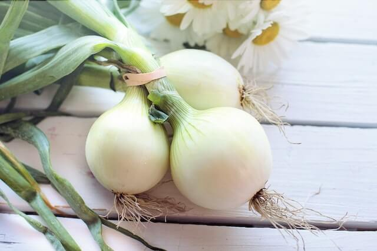
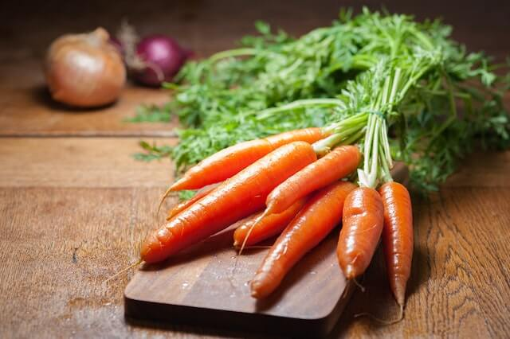
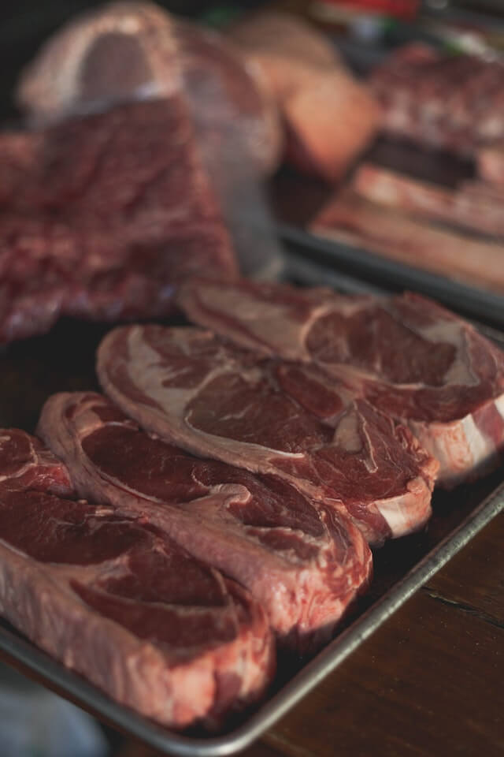
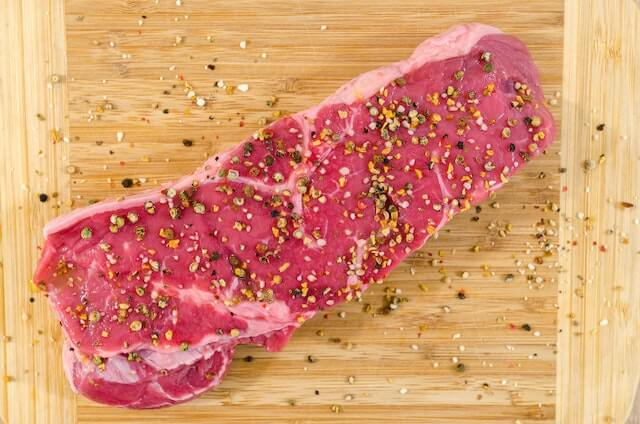
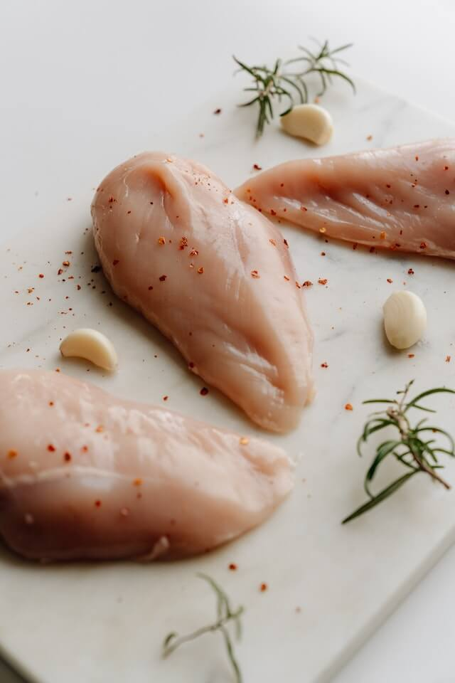

Bienvenidos a Fruver los Toños
Frutas 🍓
Manzana 🍎

Esta es una imagen de una manzana
Peras 🍏

Esta es una imagen de una pera
Mangos 🍋

Esta es una imagen de un mango
Verduras 🥦
Cebollas 🧅

Esta es una imagen de una cebolla
Platano verde 🥒
Esta es una imagen de un platano verde
Zanahoria 🥕

Esta es una imagen de una zanahoria
Carnes y aves 🍖
Carne de cerdo 🐖

Esta es una imagen de carne de cerdo
Carne de res 🐄

Esta es una imagen de carne de res
Pollo 🐓

Esta es una imagen de pollo